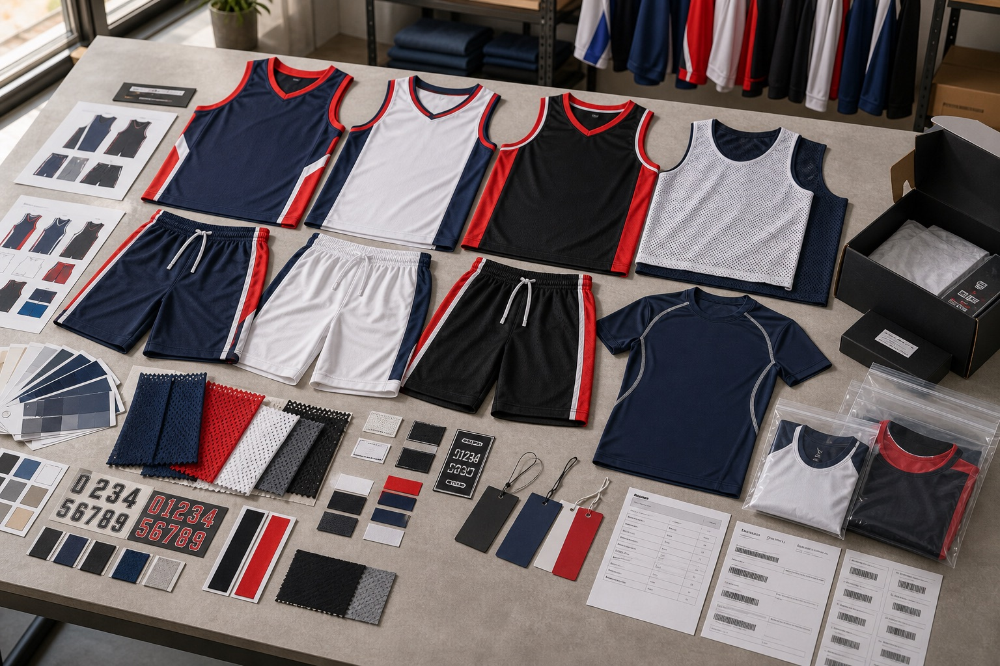
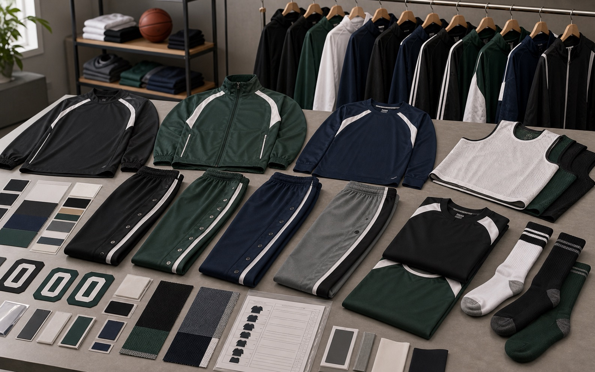
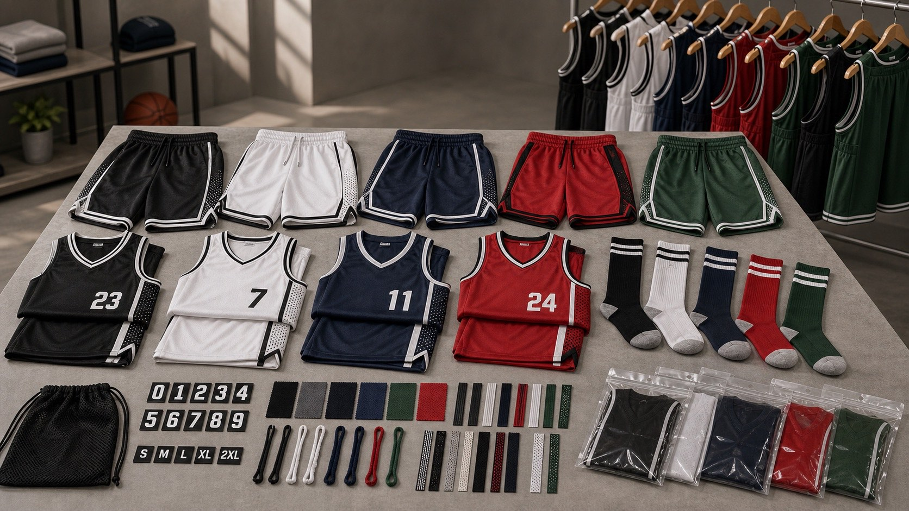

Game Jerseys and Shorts
- Home, away, reversible, fan, men, women, and youth jersey versions
- Matching shorts with drawcords, elastic waistbands, mesh side panels, and color blocking
- Sublimation, heat transfer, embroidery, woven labels, and hangtags

Basketball jerseys and team sets
Develop basketball jerseys, reversible jerseys, matching shorts, practice vests, shooting shirts, names, numbers, sponsor logos, mesh fabrics, woven labels, hangtags, and team packing.
Product details
Build complete team kits with player personalization, breathable fabric, sponsor artwork, labels, and roster-based packing.


Yes. Jerseys, shorts, reversible vests, color blocking, names, numbers, sponsor logos, mesh fabrics, labels, and packaging can be customized.
Basketball clubs, schools, academies, leagues, camps, team dealers, ecommerce stores, and fan merchandise programs.
Send jersey references, team colors, logo files, roster list, sizes, quantity, fabric preference, packing rules, delivery country, and timeline.
Send logo files, team colors, roster details, quantity, fabric direction, and deadline. We will map the right OEM or ODM route.